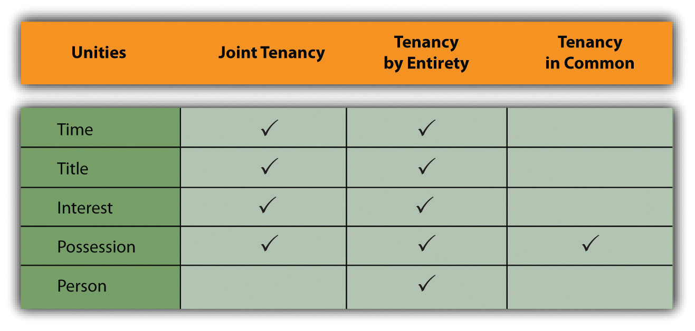

After reading this chapter, you should understand the following:
This chapter follows the steps taken when real estate is transferred by sale.
During this process, the buyer and seller enter into a series of contracts with each other and with third parties such as brokers, lenders, and insurance companies. In this chapter, we focus on the unique features of these contracts, with the exception of mortgages (Chapter 12 "Mortgages and Nonconsensual Liens") and property insurance. We conclude by briefly examining adverse possessiona method of acquiring property for free.
The transfer of property begins with the buyer’s selection of a form of ownership. Our emphasis here is not on what is being acquired (the type of property interest) but on how the property is owned.
One form of ownership of real property is legally quite simple, although lawyers refer to it with a complicated-sounding name. This is ownership by one individual, known as ownership in severaltyOwnership by one individual.. In purchasing real estate, however, buyers frequently complicate matters by grouping together—because of marriage, close friendship, or simply in order to finance the purchase more easily
When purchasers group together for investment purposes, they often use the various forms of organization discussed in Chapter 18 "Partnerships: General Characteristics and Formation", Chapter 19 "Partnership Operation and Termination", Chapter 20 "Hybrid Business Forms", and Chapter 21 "Corporation: General Characteristics and Formation"—corporations, partnerships, limited partnerships, joint ventures, and business trusts. The most popular of these forms of organization for owning real estate is the limited partnership. A real estate limited partnership is designed to allow investors to take substantial deductions that offset current income from the partnership and other similar investments, while at the same time protecting the investor from personal liability if the venture fails.
But you do not have to form a limited partnership or other type of business in order to acquire property with others; many other forms are available for personal or investment purposes. To these we now turn.
Joint tenancy is an estate in land owned by two or more persons. It is distinguished chiefly by the right of survivorship. If two people own land as joint tenants, then either becomes the sole owner when the other dies. For land to be owned jointly, four unities must coexist:
Figure 31.1 Forms of Ownership and Unities
Suppose a woman owns some property and upon marriage wishes to own it jointly with her husband. She deeds it to herself and her husband “as joint tenants and not tenants in common.” Strictly speaking, the common law would deny that the resulting form of ownership was joint because the unities of title and time were missing. The wife owned the property first and originally acquired title under a different conveyance. But the modern view in most states is that an owner may convey directly to herself and another in order to create a joint estate.
When one or more of the unities is destroyed, however, the joint tenancy lapses. Fritz and Gary own a farm as joint tenants. Fritz decides to sell his interest to Jesse (or, because Fritz has gone bankrupt, the sheriff auctions off his interest at a foreclosure sale). Jesse and Gary would hold as tenants in common and not as joint tenants. Suppose Fritz had made out his will, leaving his interest in the farm to Reuben. On Fritz’s death, would the unities be destroyed, leaving Gary and Reuben as tenants in common? No, because Gary, as joint tenant, would own the entire farm on Fritz’s death, leaving nothing behind for Reuben to inherit.
About half the states permit husbands and wives to hold property as tenants by the entiretyWhen spouses own property jointly and all unities are applicable.. This form of ownership is similar to joint tenancy, except that it is restricted to husbands and wives. This is sometimes described as the unity of person. In most of the states permitting tenancy by the entirety, acquisition by husband and wife of property as joint tenants automatically becomes a tenancy by the entirety. The fundamental importance of tenancy by the entirety is that neither spouse individually can terminate it; only a joint decision to do so will be effective. One spouse alone cannot sell or lease an interest in such property without consent of the other, and in many states a creditor of one spouse cannot seize the individual’s separate interest in the property, because the interest is indivisible.
Two or more people can hold property as tenants in commonWhen the unity of possession is present—that is, when each is entitled to occupy the property. None of the other unities—of time, title, or interest—is necessary, though their existence does not impair the common ownership. when the unity of possession is present, that is, when each is entitled to occupy the property. None of the other unities—of time, title, or interest—is necessary, though their existence does not impair the common ownership. Note that the tenants in common do not own a specific portion of the real estate; each has an undivided share in the whole, and each is entitled to occupy the whole estate. One tenant in common may sell, lease, or mortgage his undivided interest. When a tenant in common dies, his interest in the property passes to his heirs, not to the surviving tenants in common.
Because tenancy in common does not require a unity of interest, it has become a popular form of “mingling,” by which unrelated people pool their resources to purchase a home. If they were joint tenants, each would be entitled to an equal share in the home, regardless of how much each contributed, and the survivor would become sole owner when the other owner dies. But with a tenancy-in-common arrangement, each can own a share in proportion to the amount invested.
In ten states—Alaska, Arizona, California, Idaho, Louisiana, Nevada, New Mexico, Texas, Washington, and Wisconsin—property acquired during a marriage is said to be community propertyThere are differences among community property states, but the general theory is that, with certain exceptions, each spouse has an undivided equal interest in property acquired while the husband and wife are married to each other.. There are differences among these states, but the general theory is that with certain exceptions, each spouse has an undivided equal interest in property acquired while the husband and wife are married to each other. The major exception is for property acquired by gift or inheritance during the marriage. (By definition, property owned by either spouse before the marriage is not community property.) Property acquired by gift of inheritance or owned before the marriage is known as separate propertyProperty acquired by gift of inheritance or owned before the marriage.. Community property states recognize other forms of ownership; specifically, husbands and wives may hold property as joint tenants, permitting the survivor to own the whole.
The consequence of community property laws is that either the husband or the wife may manage the community property, borrow against it, and dispose of community personal property. Community real estate may only be sold or encumbered by both jointly. Each spouse may bequeath only half the community property in his or her will. In the absence of a will, the one-half property interest will pass in accordance with the laws of intestate succession. If the couple divorces, the states generally provide for an equal or near-equal division of the community property, although a few permit the court in its discretion to divide in a different proportion.
In popular parlance, a condominium is a kind of apartment building, but that is not its technical legal meaning. Condominium is a form of ownership, not a form of structure, and it can even apply to space—for example, to parking spaces in a garage. The word condominium means joint ownership or control, and it has long been used whenever land has been particularly scarce or expensive. Condominiums were popular in ancient Rome (especially near the Forum) and in the walled cities of medieval Europe.
In its modern usage, condominium refers to a form of housing involving two elements of ownership. The first is the living space itself, which may be held in common, in joint tenancy, or in any other form of ownership. The second is the common space in the building, including the roof, land under the structure, hallways, swimming pool, and the like. The common space is held by all purchasers as tenants in common. The living space may not be sold apart from the interest in the common space.
Two documents are necessary in a condominium sale—the master deed and the bylaws. The master deed (1) describes the condominium units, the common areas, and any restrictions that apply to them; (2) establishes the unit owner’s interest in the common area, his number of votes at owners’ association meetings, and his share of maintenance and operating expenses (sometimes unit owners have equal shares, and sometimes their share is determined by computing the ratio of living area or market price or original price of a single unit to the whole); and (3) creates a board of directors to administer the affairs of the whole condominium. The bylaws usually establish the owners’ association, set out voting procedures, list the powers and duties of the officers, and state the obligations of the owners for the use of the units and the common areas.
Another popular form of owning living quarters with common areas is the cooperative. Unlike the person who lives in a condominium, the tenant of a cooperative does not own a particular unit. Instead, he owns a share of the entire building. Since the building is usually owned by a corporation (a cooperative corporation, hence the name), this means that the tenant owns stock in the corporation. A tenant occupies a unit under a lease from the corporation. Together, the lease and stock in the building corporation are considered personal, not real, property.
In a condominium, an owner of a unit who defaults in paying monthly mortgage bills can face foreclosure on the unit, but neighbors in the building suffer no direct financial impact, except that the defaulter probably has not paid monthly maintenance charges either. In a cooperative, however, a tenant who fails to pay monthly charges can jeopardize the entire building, because the mortgage is on the building as a whole; consequently, the others will be required to make good the payments or face foreclosure.
A time-share is an arrangement by which several people can own the same property while being entitled to occupy the premises exclusively at different times on a recurring basis. In the typical vacation property, each owner has the exclusive right to use the apartment unit or cottage for a specified period of time each year—for example, Mr. and Mrs. Smith may have possession from December 15 through December 22, Mr. and Mrs. Jones from December 23 through December 30, and so on. The property is usually owned as a condominium but need not be. The sharers may own the property in fee simple, hold a joint lease, or even belong to a vacation club that sells time in the unit.
Time-share resorts have become popular in recent years. But the lure of big money has brought unscrupulous contractors and salespersons into the market. Sales practices can be unusually coercive, and as a result, most states have sets of laws specifically to regulate time-share sales. Almost all states provide a cooling-off period, or rescission period; these periods vary from state to state and provide a window where buyers can change their minds without forfeiting payments or deposits already made.
Property is sometimes owned by one person or one entity, but more often two or more persons will share in the ownership. Various forms of joint ownership are possible, including joint tenancies, tenancy by the entirety, and tenancy in common. Married persons should be aware of whether the state they live in is a community property state; if it is, the spouse will take some interest in any property acquired during the marriage. Beyond traditional landholdings, modern real estate ownership may include interests in condominiums, cooperatives, or time-shares.
Once the buyer (or buyers) knows what form of ownership is most desirable, the search for a suitable property can begin. This search often involves contact with a broker hired by the seller. The seller’s contract with the broker, known as the listing agreementAn agreement between the owner of real property and a real estate broker., is the first of the series of contracts in a typical real estate transaction. As you consider these contracts, it is important to keep in mind that despite the size of the transaction and the dire financial consequences should anything go awry, the typical person (buyer or seller) usually acts as his or her own attorney. An American Bar Association committee has noted the following:
It is probably safe to say that in a high percentage of cases the seller is unrepresented and signs the contracts of brokerage and sale on the basis of his faith in the broker. The buyer does not employ a lawyer. He signs the contract of sale without reading it and, once financing has been obtained, leaves all the details of title search and closing to the lender or broker. The lender or broker may employ an attorney but, where title insurance is furnished by a company maintaining its own title plant, it is possible that no lawyer, not even house counsel, will appear.
This being so, the material that follows is especially important for buyers and sellers who are not represented in the process of buying or selling real estate.
Real estate brokers, and the search for real estate generally, are subject to state and federal government regulation. Every state requires real estate brokers to be licensed. To obtain a license, the broker must pass an examination covering the principles of real estate practice, transactions, and instruments. Many states additionally insist that the broker take several courses in finance, appraisal, law, and real estate practice and apprentice for two years as a salesperson in a real estate broker’s office.
Two federal civil rights laws also play an important role in the modern real estate transaction. These are the Civil Rights Act of 1866 and the Civil Rights Act of 1968 (Fair Housing Act). In Jones v. Alfred H. Mayer Co.,Jones v. Alfred H. Mayer Co., 392 U.S. 409 (1968). the Supreme Court upheld the constitutionality of the 1866 law, which expressly gives all citizens of the United States the same rights to inherit, purchase, lease, sell, hold, and convey real and personal property. A minority buyer or renter who is discriminated against may sue for relief in federal court, which may award damages, stop the sale of the house, or even direct the seller to convey the property to the plaintiff.
The 1968 Fair Housing Act prohibits discrimination on the grounds of race, color, religion, sex, national origin, handicap, or family status (i.e., no discrimination against families with children) by any one of several means, including the following:
However, the 1968 act contains several exemptions:
Sale or rental of a single-family house if the seller
The net impact of these laws is that discrimination based on color or race is flatly prohibited and that other types of discrimination are also barred unless one of the enumerated exemptions applies.
When the seller hires a real estate broker, he will sign a listing agreement. (In several states, the Statute of Frauds says that the seller must sign a written agreement; however, he should do so in all states in order to provide evidence in the event of a later dispute.) This listing agreement sets forth the broker’s commission, her duties, the length of time she will serve as broker, and other terms of her agency relationship. Whether the seller will owe a commission if he or someone other than the broker finds a buyer depends on which of three types of listing agreements has been signed.
If the seller agrees to an exclusive-right-to-sellIf the seller agrees to an exclusive-right-to-sell agency, he will owe the broker the stated commission regardless of who finds the buyer. agency, he will owe the broker the stated commission regardless of who finds the buyer. Language such as the following gives the broker an exclusive right to sell: “Should the seller or anyone acting for the seller (including his heirs) sell, lease, transfer, or otherwise dispose of the property within the time fixed for the continuance of the agency, the broker shall be entitled nevertheless to the commission as set out herein.”
Somewhat less onerous from the seller’s perspective (and less generous from the broker’s perspective) is the exclusive agencyThe broker has the exclusive right to sell and will be entitled to the commission if anyone other than the seller finds the buyer (in other words, the seller will owe no commission if he finds a buyer).. The broker has the exclusive right to sell and will be entitled to the commission if anyone other than the seller finds the buyer (i.e., the seller will owe no commission if he finds a buyer). Here is language that creates an exclusive agency: “A commission is to be paid the broker whether the purchaser is secured by the broker or by any person other than the seller.”
The third type of listing, relatively rarely used, is the open listing, which authorizes “the broker to act as agent in securing a purchaser for my property.” The open listingCalls for payment to the broker only if the broker was instrumental in finding the buyer; the broker is not entitled to her commission if anyone else, seller or otherwise, locates the buyer. calls for payment to the broker only if the broker was instrumental in finding the buyer; the broker is not entitled to her commission if anyone else, seller or otherwise, locates the buyer.
Suppose the broker finds a buyer, but the seller refuses at that point to sell. May the seller simply change his mind and avoid having to pay the broker’s commission? The usual rule is that when a broker finds a buyer who is “ready, willing, and able” to purchase or lease the property, she has earned her commission. Many courts have interpreted this to mean that even if the buyers are unable to obtain financing, the commission is owed nevertheless once the prospective buyers have signed a purchase agreement. To avoid this result, the seller should insist on either a “no deal, no commission” clause in the listing agreement (entitling the broker to payment only if the sale is actually consummated) or a clause in the purchase agreement making the purchase itself contingent on the buyer’s finding financing.
Once the listing agreement has been signed, the broker becomes the seller’s agent—or, as occasionally happens, the buyer’s agent, if hired by the buyer. A broker is not a general agent with broad authority. Rather, a broker is a special agent with authority only to show the property to potential buyers. Unless expressly authorized, a broker may not accept money on behalf of the seller from a prospective buyer. Suppose Eunice hires Pete’s Realty to sell her house. They sign a standard exclusive agency listing, and Pete cajoles Frank into buying the house. Frank writes out a check for $10,000 as a down payment and offers it to Pete, who absconds with the money. Who must bear the loss? Ordinarily, Frank would have to bear the loss, because Pete was given no authority to accept money. If the listing agreement explicitly said that Pete could accept the down payment from a buyer, then the loss would fall on Eunice.
Although the broker is but a special agent, she owes the seller, her principal, a fiduciary dutyA fiduciary duty is a duty of the highest loyalty and trust. It means that the broker cannot buy the property for himself through an intermediary without full disclosure to the seller.. (See Chapter 14 "Relationships between Principal and Agent" on relations between principal and agent.) A fiduciary duty is a duty of the highest loyalty and trust. It means that the broker cannot buy the property for herself through an intermediary without full disclosure to the seller of her intentions. Nor may the broker secretly receive a commission from the buyer or suggest to a prospective buyer that the property can be purchased for less than the asking price.
Once the buyer has selected the real estate to be acquired, an agreement of sale will be negotiated and signed. Our discussion here will focus on specific aspects of the real estate contract. The Statute of Frauds requires that contracts for sale of real estate must be in writing. The writing must contain certain information.
The agreement must contain the names of the buyers and sellers. As long as the parties sign the agreement, however, it is not necessary for the names of buyers and sellers to be included within the body of the agreement.
The property must be described sufficiently for a court to identify the property without having to look for evidence outside the agreement. The proper address, including street, city, and state, is usually sufficient.
The price terms must be clear enough for a court to enforce. A specific cash price is always clear enough. But a problem can arise when installment payments are to be made. To say “$50,000, payable monthly for fifteen years at 12 percent” is not sufficiently detailed, because it is impossible to determine whether the installments are to be equal each month or are to be equal principal payments with varying interest payments, declining monthly as the balance decreases.
As a matter of prudence, both buyer and seller should sign the purchase agreement. However, the Statute of Frauds requires only the signature of the party against whom the agreement is to be enforced. So if the seller has signed the agreement, he cannot avoid the agreement on the grounds that the buyer has not signed it. However, if the buyer, not having signed, refuses to go to closing and take title, the seller would be unable to enforce the agreement against him.
Unless the contract specifically states otherwise, the seller must deliver marketable titleA marketable title is one that can be transferred to a new owner without the likelihood that claims will be made on it by another party.. A marketable title is one that is clear of restrictions to which a reasonable buyer would object. Most buyers would refuse to close the deal if there were potential third-party claims to all or part of the title. But a buyer would be unreasonable if, at closing, he refused to consummate the transaction on the basis that there were utility easements for the power company or a known and visible driveway easement that served the neighboring property. As a precaution, a seller must be sure to say in the contract for sale that the property is being sold “subject to easements and restrictions of record.” A buyer who sees only such language should insist that the particular easements and restrictive covenants be spelled out in the agreement before he signs.
Suppose the house burns down after the contract is signed but before the closing. Who bears the loss? Once the contract is signed, most states apply the rule of equitable conversion, under which the buyer’s interest (his executory right to enforce the contract to take title to the property) is regarded as real property, and the seller’s interest is regarded as personal property. The rule of equitable conversion stems from an old maxim of the equity courts: “That which ought to be done is regarded as done.” That is, the buyer ought to have the property and the seller ought to have the money. A practical consequence of this rule is that the loss of the property falls on the buyer. Because most buyers do not purchase insurance until they take title, eleven states have adopted the Uniform Vendor and Purchaser Risk Act, which reverses the equitable conversion rule and places risk of loss on the seller. The parties may themselves reverse the application of the rule; the buyer should always insist on a clause in a contract stating that risk of loss remains with the seller until a specified date, such as the closing.
As protection against the buyer’s default, the seller usually insists on a down payment known as earnest money. This is intended to cover such immediate expenses as proof of marketable title and the broker’s commission. If the buyer defaults, he forfeits the earnest money, even if the contract does not explicitly say so.
Performance of most real estate contracts is subject to various contingencies—that is, it is conditioned on the happening of certain events. For example, the buyer might wish to condition his agreement to buy the house on his ability to find a mortgage or to find one at a certain rate of interest. Thus the contract for sale might read that the buyer “agrees to buy the premises for $50,000, subject to his obtaining a $40,000 mortgage at 5 percent.” The person protected by the contingency may waive it; if the lowest interest rate the buyer could find was 5.5 percent, he could either refuse to buy the house or waive the condition and buy it anyway.
A frequent difficulty in contracting to purchase real estate is the length of time it takes to receive an acceptance to an offer. If the acceptance is not received in a reasonable time, the offeror may treat the offer as rejected. To avoid the uncertainty, an offeror should always state in his offer that it will be held open for a definite period of time (five working days, two weeks, or whatever). The contract also ought to spell out the times by which the following should be done: (1) seller’s proof that he has title, (2) buyer’s review of the evidence of title, (3) seller’s correction of title defects, (4) closing date, and (5) possession by the buyer. The absence of explicit time provisions will not render the contract unenforceable—the courts will infer a reasonable time—but their absence creates the possibility of unnecessary disputes.
Most real estate transactions involve two kinds of deeds, the general warranty deed and the quitclaim deed.
Quitclaim deed. The simplest form of deed is the quitclaim deedA deed in which the seller makes no warranties., in which the seller makes no warranties. Instead, he simply transfers to the buyer whatever title he had, defects and all. A quitclaim deed should not be used in the ordinary purchase and sale transaction. It is usually reserved for removing a cloud on the title—for instance, a quitclaim deed by a widow who might have a dower interest in the property.
If the purchase agreement is silent about the type of deed, courts in many states will require the seller to give the buyer a quitclaim deed. In the contract, the buyer should therefore specify that the seller is to provide a warranty deed at closing.
When buyers move in after the closing, they frequently discover defects (the boiler is broken, a pipe leaks, the electrical power is inadequate). To obtain recourse against such an eventuality, the buyer could attempt to negotiate a clause in the contract under which the seller gives a warranty covering named defects. However, even without an express warranty, the law implies two warranties when a buyer purchases a new house from a builder. These are warranties that (1) the house is habitable and (2) the builder has completed the house in a workmanlike manner. Most states have refused to extend these warranties to subsequent purchasers—for example, to the buyer from a seller who had bought from the original builder. However, a few states have begun to provide limited protection to subsequent purchasers—in particular, for defects that a reasonable inspection will not reveal but that will show up only after purchase.
Contracts are often formed and performed simultaneously, but in real estate transactions there is more often a gap between contract formation and performance (the closing). The reason is simple: the buyer must have time to obtain financing and to determine whether the seller has marketable title. That is not always easy; at least, it is not as straightforward as looking at a piece of paper. To understand how title relates to the real estate transaction, some background on recording statutes will be useful.
Suppose Slippery Sam owned Whispering Pines, a choice resort hotel on Torch Lake. On October 1, Slippery deeded Whispering Pines to Lorna for $1,575,000. Realizing the profit potential, Slippery decided to sell it again, and did so on November 1, without bothering to tell Malvina, the new buyer to whom he gave a new deed, that he had already sold it to Lorna. He then departed for a long sailing trip to the British Virgin Islands.
When Malvina arrives on the doorstep to find Lorna already tidying up, who should prevail? At common law, the first deed prevailed over subsequent deeds. So in our simple example, if this were a pure common-law state, Lorna would have title and Malvina would be out of luck, stuck with a worthless piece of paper. Her only recourse, probably futile, would be to search out and sue Slippery Sam for fraud. Most states, however, have enacted recording statutesStatutes that award title to the person who has complied with the requirement to place the deed in a public registry, usually a county Register of Deeds office., which award title to the person who has complied with the requirement to place the deed in a publicly available file in a public office in the county, often called the recorder’s office or the register of deeds.
Under the most common type of recording statute, called a notice statute, a deed must be recorded in order for the owner to prevail against a subsequent purchaser. Assume in our example that Lorna recorded her deed on November 2 and that Malvina recorded on November 4. In a notice-statute state, Malvina’s claim to title would prevail over Lorna’s because on the day that Malvina received title (November 1), Lorna had not yet recorded. For this rule to apply, Malvina must have been a bona fide purchaser, meaning that she must have (1) paid valuable consideration, (2) bought in good faith, and (3) had no notice of the earlier sale. If Lorna had recorded before Malvina took the deed, Lorna would prevail if Malvina did not in fact check the public records; she should have checked, and the recorded deed is said to put subsequent purchasers on constructive noticeA buyer is on constructive notice of anything put in the public records, whether or not she actually notices..
Another common type of recording statute is the notice-race statute. To gain priority under this statute, the subsequent bona fide purchaser must also record—that is, win the race to the recorder’s office before the earlier purchaser. So in our example, in a notice-race jurisdiction, Lorna would prevail, since she recorded before Malvina did.
A third, more uncommon type is the race statute, which gives title to whoever records first, even if the subsequent purchaser is not bona fide and has actual knowledge of the prior sale. Suppose that when she received the deed, Malvina knew of the earlier sale to Lorna. Malvina got to the recording office the day she got the deed, November 1, and Lorna came in the following day. In a race-statute jurisdiction, Malvina would take title.
Given the recording statutes, the buyer must check the deed on record to determine (1) whether the seller ever acquired a valid deed to the property—that is, whether a chain of title can be traced from earlier owners to the seller—and (2) whether the seller has already sold the property to another purchaser, who has recorded a deed. There are any number of potential “clouds” on the title that would defeat a fee simple conveyance: among others, there are potential judgments, liens, mortgages, and easements that might affect the value of the property. There are two ways to protect the buyer: the abstract of title and opinion, and title insurance.
An abstract of title is a summary of the chain of title, listing all previous deeds, mortgages, tax liens, and other instruments recorded in the county land records office. The abstract is prepared by either an attorney or a title company. Since the list itself says nothing about whether the recorded instruments are legally valid, the buyer must also have the opinion of an attorney reviewing the abstract, or must determine by doing his own search of the public records, that the seller has valid title. The attorney’s opinion is known as a title opinion or certificate of title. The problem with this method of proving title is that the public records do not reveal hidden defects. One of the previous owners might have been a minor or an incompetent person who can still void his sale, or a previous deed might have been forged, or a previous seller might have claimed to be single when in fact he was married and his wife failed to sign away her dower rights. A search of the records would not detect these infirmities.
To overcome these difficulties, the buyer should obtain title insuranceA one-premium policy issued by a title insurance company after a search through the public records. Title insurance is usually provided to both the buyer and the buyer’s lender. It guarantees against defects in the title rather than any physical aspects of the property.. This is a one-premium policy issued by a title insurance company after a search through the same public records. When the title company is satisfied that title is valid, it will issue the insurance policy for a premium that could be as high as 1 percent of the selling price. When the buyer is taking out a mortgage, he will ordinarily purchase two policies, one to cover his investment in the property and the other to cover the mortgagee lender’s loan. In general, a title policy protects the buyer against losses that would occur if title (1) turns out to belong to someone else; (2) is subject to a lien, encumbrance, or other defect; or (3) does not give the owner access to the land. A preferred type of title policy will also insure the buyer against losses resulting from an unmarketable title.
Note that in determining whether to issue a policy, the title company goes through the process of searching through the public records again. The title policy as such does not guarantee that title is sound. A buyer could conceivably lose part or all of the property someday to a previous rightful owner, but if he does, the title insurance company must reimburse him for his losses.
Although title insurance is usually a sound protection, most policies are subject to various exclusions and exceptions. For example, they do not provide coverage for zoning laws that restrict use of the property or for a government’s taking of the property under its power of eminent domain. Nor do the policies insure against defects created by the insured or known by the insured but unknown to the company. Some companies will not provide coverage for mechanics’ liens, public utility easements, and unpaid taxes. (If the accrued taxes are known, the insured will be presented with a list, and if he pays them on or before the closing, they will be covered by the final policy.) Furthermore, as demonstrated in Title and Trust Co. of Florida v. Barrows, (see Section 31.4.1 "Title Insurance"), title insurance covers title defects only, not physical defects in the property.
Closing can be a confusing process because in most instances several contracts are being performed simultaneously:
Figure 31.2 Closing Process

Despite all these transactions, the critical players are the seller, the purchaser, and the bank. To place the closing process in perspective, assume that one bank holds the existing (seller’s) mortgage on the property and is also financing the buyer’s purchase. We can visualize the three main players sitting at a table, ready to close the transaction. The key documents and the money will flow as illustrated in Figure 31.2 "Closing Process".
The deed must satisfy two fundamental legal requirements: it must be in the proper form, and there must be a valid delivery. Deeds are usually prepared by attorneys, who must include not only information necessary for a valid deed but also information required in order to be able to record the deed. The following information is typically required either for a valid deed or by the recording statutes.
The grantor—the person who is conveying the property—must be designated in some manner. Obviously, it is best to give the grantor’s full name, but it is sufficient that the person or persons conveying the deed are identifiable from the document. Thus “the heirs of Lockewood Filmer” is sufficient identification if each of the heirs signs the deed.
Similarly, the deed should identify the grantee—the person to whom the property is being conveyed. It does not void the deed to misspell a person’s name or to omit part of a name, or even to omit the name of one of the grantees (as in “Lockewood Filmer and wife”). Although not technically necessary, the deed ought to detail the interests being conveyed to each grantee in order to avoid considerable legal difficulty later. “To Francis Lucas, a single man, and Joseph Lucas and Matilda Lucas, his wife” was a deed of unusual ambiguity. Did each party have a one-third interest? Or did Joseph and Matilda hold half as tenants by the entirety and Francis have a one-half interest as a tenant in common? Or perhaps Francis had a one-third interest as a tenant in common and Joseph and Matilda held two-thirds as tenants by the entirety? Or was there some other possible combination? The court chose the second interpretation, but considerable time and money could have been saved had the deed contained a few simple words of explanation.Heatter v. Lucas, 80 A.2d 749 (Pa. 1951).
Addresses of the parties should be included, although their absence will not usually invalidate the deed. However, in some states, failure to note the addresses will bar the deed from being recorded.
The deed must indicate that the grantor presently intends to convey his interest in the property to the grantee. The deed may recite that the grantor “conveys and warrants” the property (warranty deed) or “conveys and quitclaims” the property (quitclaim deed). Some deeds use the words “bargain and sell” in place of convey.
The deed must contain an accurate description of the land being conveyed, a description clear enough that the land can be identified without resorting to other evidence. Four general methods are used.
Statutes usually require that some consideration be stated in the deed, even though a grantor may convey property as a gift. When there is a selling price, it is easy enough to state it, although the actual price need not be listed. When land is being transferred as a gift, a statement of nominal consideration—for example, one dollar—is sufficient.
Dates are customary, but deeds without dates will be enforced.
The deed must be signed by the grantor and, in some states, witnesses, and these signatures must be acknowledged by a notary public in order to make the deed eligible for recording. If someone is signing for the grantor under a power of attorney, a written instrument authorizing one person to sign for another, the instrument must be recorded along with the deed.
To validly convey title to the property, the deed must not only be in proper form but also be delivered. This technical legal requirement is sometimes misunderstood. DeliveryEntails (1) physical delivery to the grantee, (2) an intention by the grantor to convey title, and (3) acceptance of title by the grantee. entails (1) physical delivery to the grantee, (2) an intention by the grantor to convey title, and (3) acceptance of title by the grantee. Because the grantor must intend to convey title, failure to meet the other two elements during the grantor’s lifetime will void title on his death (since at that point he of course cannot have an intention). Thus when a grantee is unaware of the grantor’s intention to deed the property to him, an executed deed sitting in a safe-deposit box will be invalid if discovered after the grantor’s death.
If the deed is physically delivered to the grantee or recorded, there is a rebuttable presumption that legal delivery has been made. That is, the law presumes, in the absence of evidence to the contrary, that all three conditions have been met if delivery or recording takes place. But this presumption can be rebutted, as shown in Havens v. Schoen, (see Section 31.4.2 "Delivery of a Deed").
The grantor may deliver the deed to a third party to hold until certain conditions have been met. Thus to avoid the problem of the deed sitting in the grantor’s own safe-deposit box, he could deliver it to a third party with instructions to hold it until his death and then to deliver it to the grantee. This would be an effective delivery, even though the grantee could not use the property until the grantor died. For this method to be effective, the grantor must lose all control over the deed, and the third party must be instructed to deliver the deed when the specified conditions occur.
This method is most frequently used in the commercial escrow. EscrowA method by which a third party holds a document or money or both until specified conditions have been met. is a method by which a third party holds a document or money or both until specified conditions have been met. A typical example would be a sale in which the buyer is afraid of liens that might be filed after the closing. A contractor that has supplied materials for the building of a house, for example, might file a lien against the property for any amounts due but unpaid under the contract. The effectiveness of the lien would relate back to the time that the materials were furnished. Thus, at closing, all potential liens might not have been filed. The buyer would prefer to pay the seller after the time for filing materialmen’s liens has lapsed. But sellers ordinarily want to ensure that they will receive their money before delivering a deed. The solution is for the buyer to pay the money into escrow (e.g., to a bank) and for the seller to deliver the deed to the same escrow agent. The bank would be instructed to hold both the money and the deed until the time for filing mechanics’ liens has ended. If no materialmen’s liens have been filed, then the money is paid out of escrow to the seller and the deed is released to the buyer. If a lien has been filed, then the money will not be paid until the seller removes the lien (usually by paying it off).
Most real estate is bought and sold through real estate brokers, who must be licensed by the state. Brokers have different kinds of agreements with clients, including exclusive right to sell, exclusive agency, and open listing. Brokers will usually arrange a sales agreement that includes standard provisions such as property description, earnest money, and various contingencies. A deed, usually a warranty deed, will be exchanged at the closing, but not before the buyer has obtained good proof of title, usually by getting an abstract and opinion and paying for title insurance. The deed will typically be delivered to the buyer and recorded at the county courthouse in the register of deeds’ office.
Deepak Abhishek, a single man, lives in a race-notice state. He contracts to buy a large parcel of land from his friend, Ron Khurana, for the sum of $280,000. Subsequent to the contract, Khurana finds another buyer, who is willing to pay $299,000. Khurana arranges for two closings on the same day, within two hours of each other. At 10 a.m., he sells the property to Beverly Hanks and her husband, John, for $299,000. The Hanks are not represented by an attorney. Khurana hands them the deed at closing, but he takes it back from them and says, “I will record this at the courthouse this afternoon.” The Hankses take a copy of the deed with them and are satisfied that they have bought the property; moreover, Khurana gives them a commitment from Lawyer’s Title Company that the company will insure that they are receiving fee simple title from Khurana, subject to the deed’s being recorded in the county register of deeds’ office.
At noon, Khurana has a closing with Abhishek, who is represented by an attorney. The attorney went to the courthouse earlier, at 11:30 a.m., and saw nothing on record that would prevent Khurana from conveying fee simple title. As the deal closes, and as Khurana prepares to leave town, Abhishek’s attorney goes to the courthouse and records the deed at 1:15 p.m. At 2:07 p.m., on his way out of town, Abhishek records the deed to the Hankses.
In some instances, real property can be acquired for free—or at least without paying the original owner anything. (Considerable cost may be involved in meeting the requisite conditions.) This method of acquisition—known as adverse possessionTitle may pass to someone who occupies the lands of another for a certain (statutorily prescribed) period of time in an open, notorious, and hostile manner.—is effective when five conditions are met: (1) the person claiming title by adverse possession must assert that he has a right to possession hostile to the interest of the original owner, (2) he must actually possess the property, (3) his possession must be “open and notorious,” (4) the possession must be continuous, and (5) the possession must be exclusive.
Suppose Jean and Jacques are tenants in common of a farm. Jean announces that he no longer intends to pursue agricultural habits and leaves for the city. Jacques continues to work on the land, making improvements and paying taxes and the mortgage. Years later, Jacques files suit for title, claiming that he now owns the land outright by adverse possession. He would lose, since his possession was not hostile to Jacques. To be hostile, possession of the land must be without permission and with the intention to claim ownership. Possession by one cotenant is deemed permissive, since either or both are legally entitled to possession. Suppose, instead, that Jean and Jacques are neighboring farmers, each with title to his own acreage, and that Jean decides to fence in his property. Just to be on the safe side, he knowingly constructs the fence twenty feet over on Jacques’s side. This is adverse possession, since it is clearly hostile to Jacques’s possession of the land.
Not only must the possession be hostile but it must also be actual. The possessor must enter onto the land and make some use of it. Many state statutes define the permissible type of possession—for example, substantial enclosure or cultivation and improvement. In other states, the courts will look to the circumstances of each case to determine whether the claimant had in fact possessed the land (e.g., by grazing cattle on the land each summer).
The possessor must use the land in an open way, so that the original owner could determine by looking that his land was being claimed and so that people in the area would know that it was being used by the adverse possessor. In the melodramatic words of one court, the adverse possessor “must unfurl his flag on the land, and keep it flying so that the owner may see, if he will, that an enemy has invaded his domains, and planted the standard of conquest.”Robin v. Brown, 162 A. 161 (Pa. 1932). Construction of a building on the owner’s property would be open and notorious; development of a cave or tunnel under the owner’s property would not be.
The adverse possessor must use the land continuously, not intermittently. In most states, this continuous period must last for at least twenty years. If the adverse possession is passed on to heirs or the interest is sold, the successor adverse possessors may tack on the time they claim possession to reach the twenty years. Should the original owner sell his land, the time needed to prove continuous possession will not lapse. Of course, the original owner may interrupt the period—indeed, may terminate it—by moving to eject the adverse possessor any time before the twenty years has elapsed.
The adverse possessor must claim exclusive possession of the land. Sharing the land with the owner is insufficient to ground a claim of legal entitlement based on adverse possession, since the sharing is not fully adverse or hostile. Jean finds a nice wooded lot to enjoy weekly picnics. The lot belongs to Jacques, who also uses it for picnics. This use would be insufficient to claim adverse possession because it is neither continuous nor exclusive.
If the five tests are met, then the adverse possessor is entitled to legal title. If any one of the tests is missing, the adverse possession claim will fail.
Real property can be acquired without paying the lawful owner if five conditions of adverse possession are met: (1) the person claiming title by adverse possession must assert that he has a right to possession hostile to the interest of the original owner, (2) he must actually possess the property, (3) his possession must be “open and notorious,” (4) the possession must be continuous, and (5) the possession must be exclusive.
Title and Trust Co. of Florida v. Barrows
381 So.2d 1088 (Fla. App. 1979)
McCORD, ACTING CHIEF JUDGE.
This appeal is from a final judgment awarding money damages to appellees (Barrows) for breach of title insurance policy. We reverse.
Through a realtor, the Barrowses purchased, for $ 12,500, a lot surrounded on three sides by land owned by others, all of which is a part of a beach subdivision. The fourth side of their lot borders on a platted street called Viejo Street, the right-of-way for which has been dedicated to and accepted by St. Johns County. The right-of-way line opposite their lot abuts a Corps of Engineers’ right-of-way in which there is a stone breakwater. The intracoastal waterway flows on the other side of the breakwater.
The realtor who sold the lot to the Barrows represented to them that the county would build a road in the right-of-way along Viejo Street when they began plans for building on their lot. There have been no street improvements in the dedicated right-of-way, and St. Johns County has no present plans for making any improvements. The “road” is merely a continuation of a sandy beach.
A year after purchasing the land the Barrowses procured a survey which disclosed that the elevation of their lot is approximately one to three feet above the mean high water mark. They later discovered that their lot, along with the Viejo Street right-of-way abutting it, is covered by high tide water during the spring and fall of each year.
At the time appellees purchased their lot, they obtained title insurance coverage from appellant. The title policy covered:
Any defect in or lien or encumbrance on the title to the estate or title covered hereby…or a lack of a right of access to and from the land.…
Appellees’ complaint of lack of right of access was founded on the impassable condition of the platted street. After trial without a jury, the trial court entered final judgment finding that appellees did not have access to their property and, therefore, were entitled to recover $ 12,500 from appellant the face amount of the policy.
Appellant and Florida Land Title Association, appearing as amicus curiae, argue that appellant cannot be held liable on grounds of “lack of right of access to and from the land” since there is no defect shown by the public record as to their right of access; that the public record shows a dedicated and accepted public right-of-way abutting the lot. They contend that title insurance does not insure against defects in the physical condition of the land or against infirmities in legal right of access not shown by the public record. See Pierson v. Bill, 138 Fla. 104, 189 So. 679 (1939). They argue that defects in the physical condition of the land such as are involved here are not covered by title insurance. We agree. Title insurance only insures against title defects.
The Supreme Court of North Carolina in Marriott Financial Services, Inc. v. Capitol Funds, Inc., 288 N.C. 122, 217 S.E.2d 551 (1975), construed “right of access” to mean the right to go to and from the public right-of-way without unreasonable restrictions. Compare Hocking v. Title Insurance & Trust Company, 37 Cal.2d 644, 234 P.2d 625 (1951), where, in ruling that the plaintiff failed to state a cause of action in a suit brought under her title policy, the court said:
She appears to possess fee simple title to the property for whatever it may be worth; if she has been damaged by false representations in respect to the condition and value of the land her remedy would seem to be against others than the insurers of the title she acquired.
In Mafetone, et al., v. Forest Manor Homes, Inc., et al., 34 A.D.2d 566, 310 N.Y.S.2d 17 (N.Y.1970), the plaintiff brought an action against a title insurance company for damages allegedly flowing from a change in the grade of a street. There the court said:
The title company is not responsible to plaintiffs for the damages incurred by reason of the change in elevating the abutting street to its legal grade, since the provisions of the standard title insurance policy here in question are concerned with matters affecting title to property and do not concern themselves with physical conditions of the abutting property absent a specific request by the person ordering a title report and policy.…
In McDaniel v. Lawyers’ Title Guaranty Fund, 327 So.2d 852 (Fla. 2 D.C.A. 1976), our sister court of the Second District said:
The man on the street buys a title insurance policy to insure against defects in the record title. The title insurance company is in the business of guaranteeing the insured’s title to the extent it is affected by the public records.
In the case here before us, there is no dispute that the public record shows a legal right of access to appellant’s property via the platted Viejo Street. The title insurance policy only insured against record title defects and not against physical infirmities of the platted street.
Reversed.
Havens v. Schoen
108 Mich. App. 758; 310 N.W.2d 870 (Mich. App. 1981)
[Norma Anderson Havens, the owner of certain farm property in Marlette, Michigan, in contemplation of her death executed a quit-claim deed to the property to her only daughter, Linda Karen Anderson. The deed was subsequently recorded. Subsequently, Linda Karen Anderson married and became Linda Karen Adams and died. Thereafter, Norma Anderson Havens and Norman William Scholz, a nephew of Havens who has an interest in the property as the beneficiary of a trust, brought a suit in Sanilac Circuit Court against Ernest E. Schoen, Administrator of the estate of Linda Karen Adams, deceased, and other heirs of James W. Anderson, the ex-husband of Norma Anderson Havens, seeking to set aside the deed or to impose a constructive trust on the farm property which was the subject of the deed. Arthur E. Moore, J., found no cause of action and entered judgment for defendants. The plaintiffs appeal alleging error because there never was a delivery of the deed or an intent by Havens to then presently and unconditionally convey an interest in the property.]
PER CURIAM.
In 1962, plaintiff Dr. [Norma Anderson] Havens purchased the Scholz family farm from the estate of her twin brother, Norman Scholz. She gave a deed of trust to her other brother Earl Scholz in 1964, naming her daughter Linda Karen Adams as the principal beneficiary. In 1969, she filed suit against Earl and Inez Scholz and, in settlement of that suit, the property was conveyed to Dr. Havens and her daughter, now deceased. On August 13, 1969, Dr. Havens executed a quit-claim deed to her daughter of her remaining interest in the farm. It is this deed which Dr. Havens wishes to set aside.
The trial court found that plaintiffs failed to meet the burden of proving an invalid conveyance. Plaintiffs claim that there was never a delivery or an intent to presently and unconditionally convey an interest in the property to the daughter. The deed was recorded but defendants presented no other evidence to prove delivery. The recording of a deed raises a presumption of delivery. Hooker v Tucker, 335 Mich 429, 434; 56 NW2d 246 (1953). The only effect of this presumption is to cast upon the opposite party the burden of moving forward with the evidence. Hooker v Tucker, supra. The burden of proving delivery by a preponderance of the evidence remains with the party relying on the deed. Camp v Guaranty Trust Co, 262 Mich 223, 226; 247 NW 162 (1933). Acknowledging that the deed was recorded, plaintiffs presented substantial evidence showing no delivery and no intent to presently and unconditionally convey an interest in the property. The deed, after recording, was returned to Dr. Havens. She continued to manage the farm and pay all expenses for it. When asked about renting the farm, the daughter told a witness to ask her mother. Plaintiffs presented sufficient evidence to dispel the presumption. We find that the trial court erred when it stated that plaintiffs had the burden of proof on all issues. The defendants had the burden of proving delivery and requisite intent.
In Haasjes v Woldring, 10 Mich App 100; 158 NW2d 777 (1968), leave denied 381 Mich 756 (1968), two grandparents executed a deed to property to two grandchildren. The grandparents continued to live on the property, pay taxes on it and subsequent to the execution of the deed they made statements which this Court found inconsistent with a prior transfer of property. These circumstances combined with the fact that the deed was not placed beyond the grantors’ control led the Haasjes Court to conclude that a valid transfer of title had not been effected. The Haasjes Court, citing Wandel v Wandel, 336 Mich 126; 57 NW2d 468 (1953), and Resh v Fox, 365 Mich 288, 112 NW2d 486 (1961), held that in considering whether there was a present intent to pass title, courts may look to the subsequent acts of the grantor.
This Court reviews de novo the determinations of a trial court sitting in an equity case. Chapman v Chapman, 31 Mich App 576, 579; 188 NW2d 21 (1971). Having reviewed the evidence presented by the defendants to prove delivery, we find that the defendants failed to meet their burden of proof. Under the circumstances, the recording itself and the language of the deed were not persuasive proof of delivery or intent. Defendants presented no evidence of possession of the deed by anyone but the grantor and presented no evidence showing knowledge of the deed by the grantee. No evidence was presented showing that the daughter was ever aware that she owned the property. The showing made by defendants was inadequate to carry their burden of proof. The deed must be set aside.
Plaintiffs alleged none of the grounds which have traditionally been recognized as justifying the imposition of a constructive trust. See Chapman v Chapman, supra. A constructive trust is imposed only when it would be inequitable to do otherwise. Arndt v Vos, 83 Mich App 484; 268 NW2d 693 (1978). Although plaintiffs claim relief for a mutual mistake, plaintiffs have presented no facts suggesting a mistake on the part of the grantee. Creation of a constructive trust is not warranted by the facts as found by the trial court. There has been no claim that those findings are erroneous.
We remand to the trial court to enter an order setting aside the August 13, 1969, deed from Norma Anderson Havens to Linda Karen Anderson Adams purporting to convey the interest of Dr. Havens in the farm. The decision of the trial court finding no justification for imposing a trust upon the property is affirmed.
Affirmed in part, reversed in part, and remanded.
DISSENT BY:
MacKenzie, J. (dissenting).
I respectfully dissent. The deed was recorded with the knowledge and assent of the grantor, which creates a presumption of delivery. See Schmidt v Jennings, 359 Mich 376, 383; 102 NW2d 589 (1960), Reed v Mack, 344 Mich 391, 397; 73 NW2d 917 (1955). Crucial evidence was conflicting and I would disagree that the trial court’s findings were clearly erroneous.
In Reed v Mack, the Court affirmed the trial court’s finding that there had been delivery where the grantor defendant, who had owned the property with her husband, recorded a deed conveying a property jointly to herself and the two other grantees, stating:
“We are in agreement with the trial court. The defendant-appellant, a grantor in the deed, caused the recording of the deed, the delivery of which she attacks. The recording of a warranty deed may, under some circumstances, be effectual to show delivery. A delivery to one of several joint grantees, in absence of proof to the contrary, is delivery to all. Mayhew v Wilhelm, 249 Mich 640 [229 NW 459 (1930)]. While placing a deed on record does not in itself necessarily establish delivery, the recording of a deed raises a presumption of delivery, and the whole object of delivery is to indicate an intent by the grantor to give effect to the instrument.” [Citations]
In McMahon v Dorsey, 353 Mich 623, 626; 91 NW2d 893 (1958), the significance of delivery was characterized as the manifestation of the grantor’s intent that the instrument be a completed act.
* * *
The evidence herein indicates that plaintiff Norma Anderson Havens, after she had been told she was dying from cancer, executed a quit-claim deed on August 16, 1969, to her daughter, Linda Karen Anderson. Plaintiff Havens testified that the reason she executed the deed was that she felt “if something should happen to me, at least Karen would be protected”. The deed was recorded the same day by plaintiff Havens’s attorney. Plaintiff Havens either knew that the deed was recorded then or learned of the recording shortly thereafter. Although plaintiff Havens testified that she intended only a testamentary disposition, she apparently realized that the deed was effective to convey the property immediately because her testimony indicated an intention to execute a trust agreement. Linda Karen lived on the farm for five years after the deed was recorded until her death in 1974, yet plaintiff Havens did not attempt to have Linda Karen deed the farm back to her so she could replace the deed with a trust agreement or a will. Plaintiff Havens testified that she approached her attorneys regarding a trust agreement, but both attorneys denied this. The trial judge specifically found the testimony of the attorneys was convincing and he, of course, had the benefit of observing the witnesses.
Haasjes v Woldring, 10 Mich App 100; 158 NW2d 777 (1968), relied upon by the majority, involved unrecorded deeds which remained in a strongbox under control of the grantors until after their deaths. The grantors continued to live alone on the property and pay taxes thereon. Based on the lack of recording, I find Haasjes distinguishable from the present case.
In Hooker v Tucker, 335 Mich 429; 56 NW2d 246 (1953), delivery was held not to have occurred where the grantor handed her attorney a copy of a deed containing a legal description of property she wished included in a will to be drawn by him and he subsequently mailed the deed to the grantee without the grantor’s knowledge or permission. The purported delivery by mailing being unauthorized distinguishes Hooker from this case where there was no indication the recording was done without the grantor’s authorization.
The majority relies on the grantee’s purported lack of knowledge of the conveyance but the record is not at all clear in this regard. Further, if a deed is beneficial to the grantee, its acceptance is presumed. Tackaberry v Monteith, 295 Mich 487, 493; 295 NW 236 (1940), see also Holmes v McDonald, 119 Mich 563; 78 NW 647 (1899). While the burden of proving delivery is on the person relying upon the instrument, the burden shifts upon its recordation so that the grantor must go forward with the evidence of showing nondelivery, once recordation and beneficial interest have been shown. Hooker v Tucker, supra, and Tackaberry, supra. The trial court properly found that plaintiffs failed to go forward with the evidence and found that the deed conveyed title to the farm.
Factually, this is a difficult case because plaintiff Havens executed a deed which she intended to be a valid conveyance at the time it was executed and recorded. Subsequently, when her daughter unexpectedly predeceased her, the deed created a result she had not foreseen. She seeks to eradicate the unintended result by this litigation.
I am reluctant to set aside an unambiguous conveyance which was on record and unchallenged for five years on the basis of the self-serving testimony of the grantor as to her intent at the time she executed the deed and authorized its recordation.
I would affirm.
Real property can be held in various forms of ownership. The most common forms are tenancy in common, joint tenancy, and tenancy by the entirety. Ten states recognize the community property form of ownership.
In selling real property, various common-law and statutory provisions come into play. Among the more important statutory provisions are the Civil Rights Acts of 1866 and 1968. These laws control the manner in which property may be listed and prohibit discrimination in sales. Sellers and buyers must also be mindful of contract and agency principles governing the listing agreement. Whether the real estate broker has an exclusive right to sell, an exclusive agency, or an open listing will have an important bearing on the fee to which the broker will be entitled when the property is sold.
The Statute of Frauds requires contracts for the sale of real property to be in writing. Such contracts must include the names of buyers and sellers, a description of the property, the price, and signatures. Unless the contract states otherwise, the seller must deliver marketable title, and the buyer will bear the loss if the property is damaged after the contract is signed but before the closing. The seller will usually insist on being paid earnest money, and the buyer will usually protect himself contractually against certain contingencies, such as failure to obtain financing. The contract should also specify the type of deed to be given to the buyer.
To provide protection to subsequent buyers, most states have enacted recording statutes that require buyers to record their purchases in a county office. The statutes vary: which of two purchasers will prevail depends on whether the state has a notice, notice-race, or race statute. To protect themselves, buyers usually purchase an abstract and opinion or title insurance. Although sale is the usual method of acquiring real property, it is possible to take legal title without the consent of the owner. That method is adverse possession, by which one who openly, continuously, and exclusively possesses property and asserts his right to do so in a manner hostile to the interest of the owner will take title in twenty years in most states.
A contract for a sale of property must include
If real property is damaged after a contract for sale is signed but before closing, it is generally true that the party bearing the loss is
The following deeds extend warranties to the buyer:
Under a notice-race statute,
The elements of adverse possession do not include